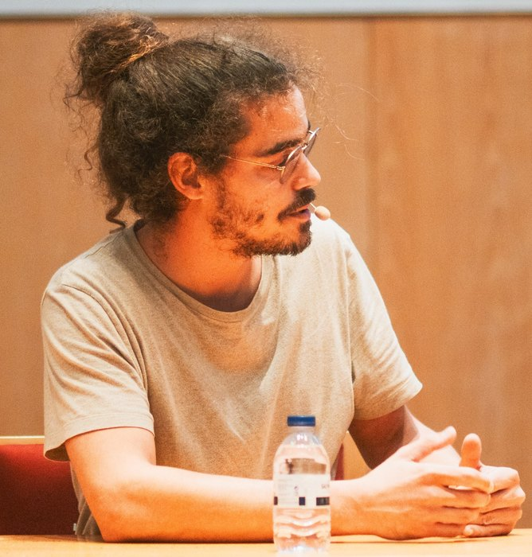

Principal Investigator · Quantum Photonics & Quantum Information
Emmanuel Zambrini Cruzeiro
Instituto de Telecomunicações · Instituto Superior Técnico
Quantum information, foundations, quantum communication, photonic platforms and optical quantum memories.